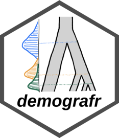
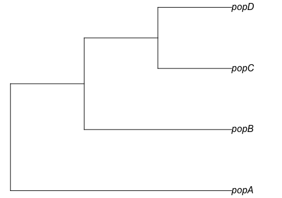

The goal of demografr is to simplify and streamline Approximate Bayesian Computation (ABC) in population genetics and make it more reproducible. Additionally, demografr aims to make ABC orders of magnitude faster and more efficient by leveraging the tree sequences as an internal data structure and computation engine.
Unlike traditional ABC approaches, which generally involve custom-built pipelines and scripts for population genetic simulation and computation of summary statistics, demografr makes it possible to perform simulation, data analysis, and ABC inference itself entirely in R within a single reproducible analysis script. By eliminating the need to write custom simulation code and scripting for integration of various population genetic tools for computing summary statistics, it lowers the barrier to entry for new users and facilitates reproducibility for all users regardless of their level of experience by eliminating many common sources of bugs.
What are the issues with standard ABC?
A traditional ABC analysis in population genetics generally involves:
- Writing a simulation script tailor-made for the demographic model of species in question using tools such as ms, scrm, msprime, or SLiM. For most realistic demographic models this presents a significant obstacle unless one is well versed in software development.
- Developing a pipeline which will draw model parameters from a set of priors, and simulate output data in an appropriate format. Saving output files to disk can be very slow, especially for large genome-scale simulations across thousands of simulation replicates.
- Computing summary statistics on the simulated data using appropriate software (often a combination of ADMIXTOOLS, PLINK, vcftools, or various custom scripts). This usually requires conversion of simulated outputs to an appropriate file format. In addition to the cost of disk-access, computing summary statistics can be quite slow depending on the statistic or program in question.
- Feeding (and often re-formatting) the outputs of summary statistics in the right format to use with the appropriate ABC inference engine, such as the R package abc.
Given the range of disparate tools required for the steps above, traditional ABC pipelines end up being quite complex, require a large amount of programming work and, because of the specifics of each demographic model, the whole procedure is usually re-invented from scratch for each study.
All in all, an unnecessary amount of time spent on ABC analyses is dedicated to software development—programming, debugging, and data munging—work that would be better spent doing research.
How does demografr help?
demografr streamlines every step of a typical ABC pipeline by leveraging the slendr framework as a building block for simulation and data analysis, making it possible to perform an entire ABC analysis in R. Taking the steps above one by one, here is how demografr makes life easier:
- slendr’s intuitive, interactive interface for definning population genetic models makes it easy to encode even complex demographic models with only bare minimum of R knowledge needed.
- demografr makes it possible to encode prior distributions of parameters using familiar R interface resembling standard probabilistic statements, and provides an automated function which simulates ABC replicates drawing parameters from priors in a trivial, one-step manner.
- Because slendr’s simulation output is a tree sequence, most population genetic statistics can be computed directly on such tree sequences using R functions which are part of slendr’s statistical library. A tree sequence is never saved to disk and no conversion between file formats is required.
- demografr facilitates tight integration with the powerful R package abc by automatically feeding its simulation data to the abc package for inference and analysis.
Installation
You can install the development version of demografr from GitHub with:
devtools::install_github("bodkan/demografr")Note that this requires an R package devtools, which you can obtain simply by running install.packages("devtools").
Note on stability
demografr is very much in an early experimental stage at this point. Although ABC fitting of “standard” demographic models (i.e. estimating Ne, split times and gene-flow parameters for non-spatial models) already works very nicely, our long-term ambitions for the project are much higher. As such, please be aware that the interface might change significantly on a short notice to accomodate features for estimating parameters of more complex custom models such as spatial models etc.
An example ABC analysis
Imagine that we sequenced genomes of individuals from three populations “p1”, “p2”, and “p3”.
Let’s also assume that we know that the three populations are phylogenetically related in the following way but we don’t know anything else (i.e., we have no idea about their Ne or split times):

After sequencing the genomes of individuals from these populations, we computed the nucleotide diversity in these populations as well as their pairwise genetic divergence, and observed the following values which we saved in two standard R data frames:
pi_df # nucleotide diversity in each population
#> # A tibble: 4 × 2
#> stat value
#> <chr> <dbl>
#> 1 pi_popA 0.0000396
#> 2 pi_popB 0.0000983
#> 3 pi_popC 0.000150
#> 4 pi_popD 0.000129
div_df # pairwise divergence d_X_Y between populations X and Y
#> # A tibble: 6 × 2
#> stat value
#> <chr> <dbl>
#> 1 d_popA_popB 0.000198
#> 2 d_popA_popC 0.000199
#> 3 d_popA_popD 0.000200
#> 4 d_popB_popC 0.000183
#> 5 d_popB_popD 0.000183
#> 6 d_popC_popD 0.000175For the purpose of the ABC analysis below, we will bind all statistics in an R list, naming them appropriately. The names of each statistic (here “diversity” and “divergence”) have meaning and are quite important for later steps:
observed <- list(diversity = pi_df, divergence = div_df)Setting up a “scaffold” model
The first step in a demografr ABC analysis is setting up a “scaffold” model for which we will estimate the posterior parameters of interest.
One way to do this is by building a normal slendr model (for instance, a model such as this). However, for simpler models like ours, it can be easier to input the scaffold as a standard phylogenetic tree (here we use the function tree_model() to input a tree in the Newick format).
model <- tree_model(tree = "(popA,(popB,(popC,popD)));", time_span = 10000)(Note that the parameter time_span indicates how much evolutionary time does of our model cover, in units of generations. Support for arbitrary units such as years will be supported soon.)
Because the model object contains a standard slendr demographic model, we can inspect it as such, to make sure everything is set up correctly:
model
#> slendr 'model' object
#> ---------------------
#> populations: popA, popB, popC, popD
#> geneflow events: [no geneflow]
#> generation time: 1
#> time direction: forward
#> total running length: 10000 model time units
#> model type: non-spatial
#>
#> non-serialized slendr model
plot_model(model)
Note that we don’t pay attention to the split times or population sizes of this model because we will be fitting those parameters with the ABC procedure below—the model we just constructed is really just a scaffold capturing some prior information we have about the phylogenetic relationship between populations, the values of other model parameters (Ne, split times) are arbitrary.
That said, we have the option to fix some aspects of our model by building and fine-tuning the model using standard slendr features for defining models rather than importing the model as a phylogenetic tree (see this slendr vignette).
Setting up priors
We are interested in estimating the Ne of all populations and their split times. demografr makes this very easy using a familiar symbolic formula syntax in R:
priors <- list(
Ne_popA ~ runif(1, 10000),
Ne_popB ~ runif(1, 10000),
Ne_popC ~ runif(1, 10000),
Ne_popD ~ runif(1, 10000),
Tsplit_popA_popB ~ runif(1, 3000),
Tsplit_popB_popC ~ runif(3000, 6000),
Tsplit_popC_popD ~ runif(6000, 9000)
)In an ABC simulation step below, the formulas are used to draw the values of each parameter from specified distributions (in this case, all uniform distributions across a wide range of parameter values).
Defining summary functions
Each run of a demografr ABC simulation internally produces a tree sequence as an output. Because tree sequence represents an efficient, succint representation of the complete genealogical history of a set of samples, it is possible to compute population genetic statistics directly on the tree sequence without having to first save each simulation output to disk for computation in different software. Thanks to slendr’s library of tree-sequence functions serving as an R interface to the tskit module, you can specify summary statistics to be computed for ABC using plain and simple R code.
In our example, because we computed nucleotide diversity and pairwise divergence in the individuals sequenced from populations “p1”, “p2”, and “p3”, we will define the following functions. Crucially, when run on a tree-sequence object, they will produce an output data frame in the format analogous to the empirical statistics shown in data frames diversity and divergence above:
compute_pi <- function(ts) {
samples <- ts_samples(ts) %>% split(., .$pop) %>% lapply(`[[`, "name")
ts_diversity(ts, sample_sets = samples) %>%
mutate(stat = paste0("pi_", set)) %>%
select(stat, value = diversity)
}
compute_div <- function(ts) {
samples <- ts_samples(ts) %>% split(., .$pop) %>% lapply(`[[`, "name")
ts_divergence(ts, sample_sets = samples) %>%
mutate(stat = sprintf("d_%s_%s", x, y)) %>%
select(stat, value = divergence)
}
functions <- list(diversity = compute_pi, divergence = compute_div)Crucially, the outputs of these summary functions must match the format of the observed summary statistics (i.e., the data frames produced must have the same format). This minor inconvenience during ABC setup saves us the headache of having to match values of statistics between observed and simulated data during ABC inference itself.
ABC simulations
Having defined the scaffold model, a set of priors for our parameters of interest (Ne and split times), as well as two summary statistic functions, we can plug all this information into the function simulate_abc.
Before we run a potentially computationally costly simulations, it is a good idea to validate the ABC components we have so far assembled using the function validate_abc():
validate_abc(model, priors, functions, observed)
#> ------------------------------------------------------------
#> Testing sampling of each prior parameter:
#> Found 4 priors of type Ne -- testing their sampling...
#> Found 3 priors of type Tsplit -- testing their sampling...
#> Found 0 priors of type gf -- testing their sampling...
#> ------------------------------------------------------------
#> Modifying the scaffold model with sampled prior values...
#> ------------------------------------------------------------
#> Simulating a tree sequence from the constructed model...
#> ------------------------------------------------------------
#> Computing user-defined summary functions on the tree sequence:
#> * diversity
#> * divergence
#> ------------------------------------------------------------
#> Checking the format of data frames with simulated summary statistics:
#> * diversity
#> * divergence
#> ============================================================
#> No issues have been found in the ABC setup!Having verified that all model components are set up correctly, we can proceed to the ABC simulations themselves, using demografr’s function simulate_abc():
data <- simulate_abc(
model, priors, functions, observed, iterations = 10000,
sequence_length = 10e6, recombination_rate = 1e-8, mutation_rate = 1e-8
)
dataAt this point we have generated summary statistics for simulations of models using parameters drawn from our priors. In the next step, we can finally do inference of our parameters.
ABC inference
Having all the information about observed and simulated data bound in a single R object abc_data, we can finally perform the ABC inference. demografr includes a convenient function perform_abc() which reformats the simulated and observed data in a format required by the R package abc and internally calls the function abc() of that package.
Note that perform_abc is just convenience wrapper around the abc() function in the package abc, saving us a little work juggling the necessary matrices manually. As such, all parameters of the functionabc()can be provided toperform_abc()`, which will then pass them on appropriately.
abc <- perform_abc(data, tolerance = 0.05, method = "neuralnet")
#> Warning: All parameters are "none" transformed.
#> 12345678910
#> 12345678910Inspecting the posteriors
Now that we have the ABC output object ready, we can get a data frame with summary statistics of the posterior distributions of our parameters. For instance, we can easily read the maximum a posteriori probability (MAP) of the parameters in the row labelled “Weighted Mode:”:
extract_summary(abc)
#> Ne_popA Ne_popB Ne_popC Ne_popD Tsplit_popA_popB
#> Min.: 732.4446 2263.037 7913.928 1937.771 -56.92838
#> Weighted 2.5 % Perc.: 981.0543 2486.451 8384.649 2392.855 350.93585
#> Weighted Median: 1286.0200 2792.185 9178.549 3244.835 1725.07007
#> Weighted Mean: 1279.0194 2796.884 9173.395 3262.525 1676.77737
#> Weighted Mode: 1415.3427 2744.639 9298.698 3196.112 2420.66630
#> Weighted 97.5 % Perc.: 1613.3523 3094.075 9905.164 4203.204 2912.56639
#> Max.: 1872.2067 3247.760 10552.792 4912.133 3124.42587
#> Tsplit_popB_popC Tsplit_popC_popD
#> Min.: 2633.633 5810.885
#> Weighted 2.5 % Perc.: 2993.411 6133.104
#> Weighted Median: 4382.730 7505.768
#> Weighted Mean: 4406.088 7545.439
#> Weighted Mode: 3931.193 6580.756
#> Weighted 97.5 % Perc.: 5827.728 8915.765
#> Max.: 6203.838 9441.003Because a chart is always more informative than a table, we can easily get a visualization of our posteriors using the function plot_posterior():
plot_posterior(abc, type = "Ne")
plot_posterior(abc, type = "Tsplit")
#> Warning: Removed 2 rows containing non-finite values (stat_density).
Because the internals of demografr ABC objects are represented by standard objects created by the abc package, we have many of the standard diagnostics functions of the abc R package at our disposal:
plot(abc, param = "Ne_popC")
The example as a single script
model <- tree_model(tree = "(popA,(popB,(popC,popD)));", time_span = 10000)
priors <- list(
Ne_popA ~ runif(1, 10000),
Ne_popB ~ runif(1, 10000),
Ne_popC ~ runif(1, 10000),
Ne_popD ~ runif(1, 10000),
Tsplit_popA_popB ~ runif(1, 3000),
Tsplit_popB_popC ~ runif(3000, 6000),
Tsplit_popC_popD ~ runif(6000, 9000)
)
compute_diversity <- function(ts) {
samples <- ts_samples(ts) %>% split(., .$pop) %>% lapply(`[[`, "name")
ts_diversity(ts, sample_sets = samples) %>%
mutate(stat = paste0("pi_", set)) %>%
select(stat, value = diversity)
}
compute_divergence <- function(ts) {
samples <- ts_samples(ts) %>% split(., .$pop) %>% lapply(`[[`, "name")
ts_divergence(ts, sample_sets = samples) %>%
mutate(stat = sprintf("d_%s_%s", x, y)) %>%
select(stat, value = divergence)
}
summary_funs <- list(diversity = compute_diversity, divergence = compute_divergence)